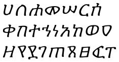
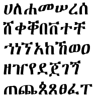
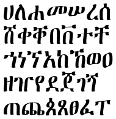
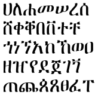
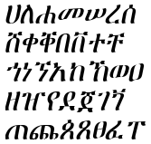
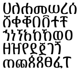

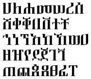
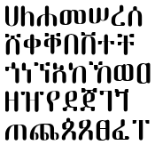


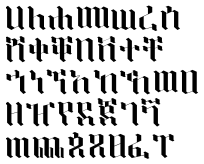


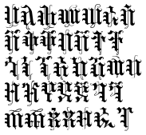
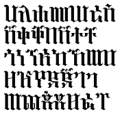

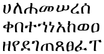

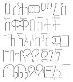


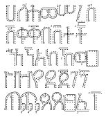

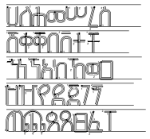


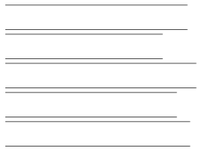

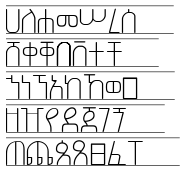

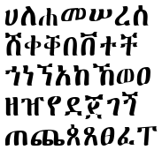


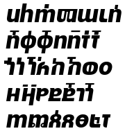

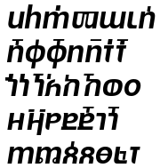

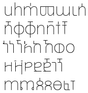

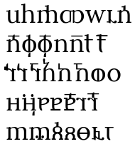


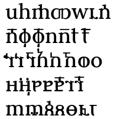


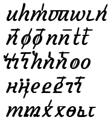

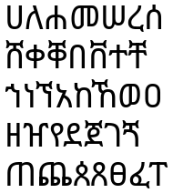
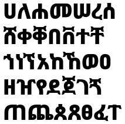


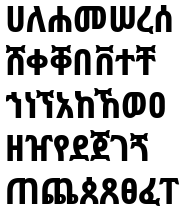
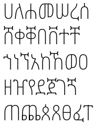
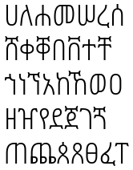
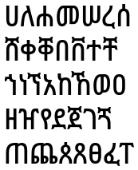
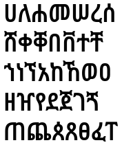
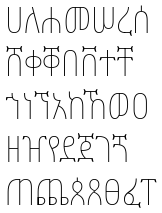

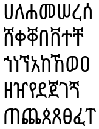


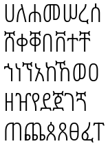


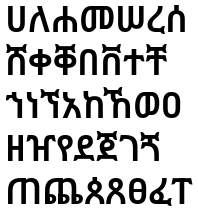


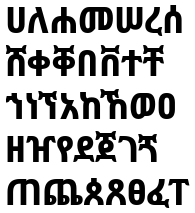

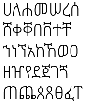
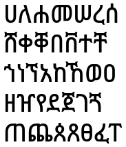

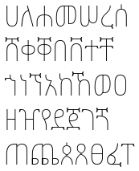


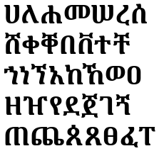

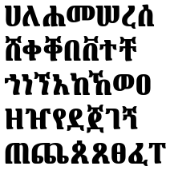


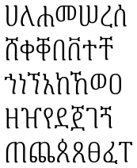

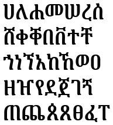

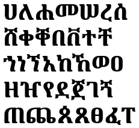

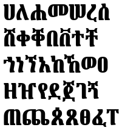
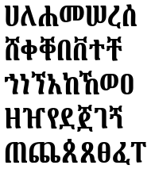
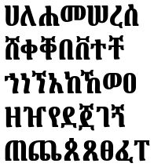


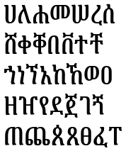

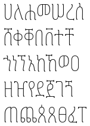


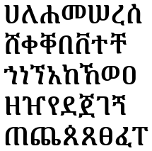


The following table presents the Unicode range that *fully* covered the orthographic requirements of a language. Verification is ongoing for languages with smaller populations, a number of which are transitioning out of digraphia.
| Ranges | Unicode Version | # of Characters | Languages | |
|---|---|---|---|---|
| Present | Past | |||
| Ethiopic Basic | 3.0 / 2000 4.1 / 2004 6.0 / 2006 |
345 +11 / 356 +2 / 358 |
Amharic(am, amh), Argobba (agj), Dizin (mdx), Hammer-Banna (amf), Gedeo (drs), Harari (har), Qimant (ahg), Silt'e (stv), Tigre (tig), Tigrinya (ti, tir), Zay (zwa) | Hadiyya (hdy), Konso (kxc), Oromo (or, oro), Sidamo (sid), Wolaita (wal), Yemsa (yem) |
| Ethiopic Supplement | 4.1 / 2004 | +79 / 437 | Awi/Awngi (awn), Blin (byn), Ge’ez (gez), Khamtanga/Xamtanga (xan) | Me'en (mym), Mursi (muz), Suri (suq) |
| Ethiopic Extended | 4.1 / 2004 | +26 / 463 | Gurage (Legacy Orthography) | |
| Ethiopic Extended-A | 6.0 / 2006 | +32 / 495 | Gamo (gmv), Gofa (gof), Dawro (dwr), Basketo (bst), Gumuz (guk) | |
| Ethiopic Extended-B | 14.0 / 2021 | +28 / 523 | Gurage (Modern Orthography)* | |
*“Gurage” encompasses Inor (ior), Kistane (gru), Mesqan (mvz), Qebena (alw), and Sebat Bet (sgw)
| Font Name | Unicode | Modern Geʾez Sylalbary | |||||||||
|---|---|---|---|---|---|---|---|---|---|---|---|
| Missing Basic | Missing Supplement | Missing Extended | Missing Extended A | Missing Extended B | Total Missing | Total | % Complete | Missing MGS | Total MGS | % Complete | |
| Abba Garima 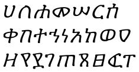 | 111 | 16 | 79 | 32 | 28 | 266 | 257 | 49.1% | 141 | 256 | 64.5% |
| Abyssinica SIL 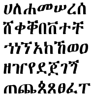 | 0 | 0 | 0 | 0 | 0 | 0 | 523 | 100% | 0 | 397 | 100% |
| Brana 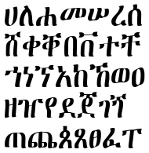 | 0 | 16 | 75 | 32 | 28 | 151 | 372 | 71.1% | 36 | 361 | 90.9% |
| Ethiopia Jiret 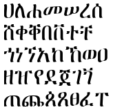 | 13 | 26 | 79 | 32 | 28 | 178 | 345 | 66% | 56 | 341 | 85.9% |
| Ethiopia Jiret Slant 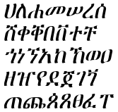 | 13 | 26 | 79 | 32 | 28 | 178 | 345 | 66% | 56 | 341 | 85.9% |
| Ethiopic Abay 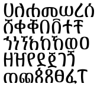 | 0 | 0 | 0 | 0 | 28 | 28 | 495 | 94.6% | 28 | 369 | 92.9% |
| Ethiopic Abay Light | 0 | 0 | 0 | 0 | 28 | 28 | 495 | 94.6% | 28 | 369 | 92.9% |
| Ethiopic Fantuwua 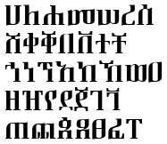 | 14 | 26 | 79 | 32 | 28 | 179 | 344 | 65.8% | 57 | 340 | 85.6% |
| Ethiopic Hiwua 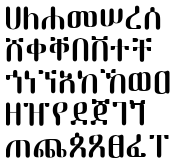 | 16 | 26 | 79 | 32 | 28 | 181 | 342 | 65.4% | 59 | 338 | 85.1% |
| Ethiopic Lessan | 0 | 0 | 0 | 0 | 28 | 28 | 495 | 94.6% | 28 | 369 | 92.9% |
| Ethiopic Lessan Light | 0 | 0 | 0 | 0 | 28 | 28 | 495 | 94.6% | 28 | 369 | 92.9% |
| Ethiopic Sadiss | 0 | 0 | 0 | 0 | 28 | 28 | 495 | 94.6% | 28 | 369 | 92.9% |
| Ethiopic Sadiss Light | 0 | 0 | 0 | 0 | 28 | 28 | 495 | 94.6% | 28 | 369 | 92.9% |
| Ethiopic Tint 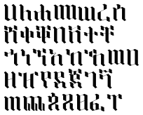 | 16 | 26 | 79 | 32 | 28 | 181 | 342 | 65.4% | 59 | 338 | 85.1% |
| Ethiopic WashRa Bold | 13 | 26 | 79 | 32 | 28 | 178 | 345 | 66% | 56 | 341 | 85.9% |
| Ethiopic WashRa Bold Slant | 13 | 26 | 79 | 32 | 28 | 178 | 345 | 66% | 56 | 341 | 85.9% |
| Ethiopic WashRa SemiBold | 13 | 26 | 79 | 32 | 28 | 178 | 345 | 66% | 56 | 341 | 85.9% |
| Ethiopic WashRa SemiBold Slant | 13 | 26 | 79 | 32 | 28 | 178 | 345 | 66% | 56 | 341 | 85.9% |
| Ethiopic Wookianos | 16 | 26 | 79 | 32 | 28 | 181 | 342 | 65.4% | 59 | 338 | 85.1% |
| Ethiopic Yebse | 16 | 26 | 79 | 32 | 28 | 181 | 342 | 65.4% | 59 | 338 | 85.1% |
| Ethiopic Yigezu Bisrat Goffer 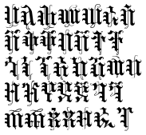 | 13 | 26 | 79 | 32 | 28 | 178 | 345 | 66% | 56 | 341 | 85.9% |
| Ethiopic Yigezu Bisrat Gothic 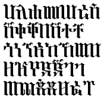 | 13 | 26 | 79 | 32 | 28 | 178 | 345 | 66% | 56 | 341 | 85.9% |
| Ethiopic Zelan | 15 | 26 | 79 | 32 | 28 | 180 | 343 | 65.6% | 58 | 339 | 85.4% |
| FreeSerif 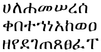 | 13 | 26 | 79 | 32 | 28 | 178 | 345 | 66% | 56 | 341 | 85.9% |
| Geez Handwriting | 28 | 26 | 79 | 32 | 28 | 193 | 330 | 63.1% | 75 | 322 | 81.1% |
| Geez Handwriting Arrows Only 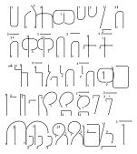 | 28 | 26 | 79 | 32 | 28 | 193 | 330 | 63.1% | 75 | 322 | 81.1% |
| Geez Handwriting Arrows Rules | 28 | 26 | 79 | 32 | 28 | 193 | 330 | 63.1% | 75 | 322 | 81.1% |
| Geez Handwriting Bold | 28 | 26 | 79 | 32 | 28 | 193 | 330 | 63.1% | 75 | 322 | 81.1% |
| Geez Handwriting Dots | 28 | 26 | 79 | 32 | 28 | 193 | 330 | 63.1% | 75 | 322 | 81.1% |
| Geez Handwriting Dots Arr Rules | 28 | 26 | 79 | 32 | 28 | 193 | 330 | 63.1% | 75 | 322 | 81.1% |
| Geez Handwriting Dots Arrows 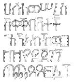 | 28 | 26 | 79 | 32 | 28 | 193 | 330 | 63.1% | 75 | 322 | 81.1% |
| Geez Handwriting Dots Rules | 28 | 26 | 79 | 32 | 28 | 193 | 330 | 63.1% | 75 | 322 | 81.1% |
| Geez Handwriting Out Arr Rules 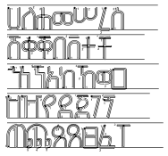 | 28 | 26 | 79 | 32 | 28 | 193 | 330 | 63.1% | 75 | 322 | 81.1% |
| Geez Handwriting Outlines | 28 | 26 | 79 | 32 | 28 | 193 | 330 | 63.1% | 75 | 322 | 81.1% |
| Geez Handwriting Outlines Arrow | 28 | 26 | 79 | 32 | 28 | 193 | 330 | 63.1% | 75 | 322 | 81.1% |
| Geez Handwriting Outlines Rules | 28 | 26 | 79 | 32 | 28 | 193 | 330 | 63.1% | 75 | 322 | 81.1% |
| Geez Handwriting Rules Only 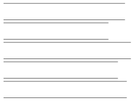 | 28 | 26 | 79 | 32 | 28 | 193 | 330 | 63.1% | 75 | 322 | 81.1% |
| Geez Handwriting with Arrows | 28 | 26 | 79 | 32 | 28 | 193 | 330 | 63.1% | 75 | 322 | 81.1% |
| Geez Handwriting with Rules 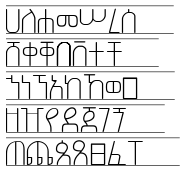 | 28 | 26 | 79 | 32 | 28 | 193 | 330 | 63.1% | 75 | 322 | 81.1% |
| Geʾez Manuscript Zemen | 0 | 0 | 0 | 0 | 0 | 0 | 523 | 100% | 0 | 397 | 100% |
| GF Zemen Unicode 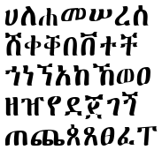 | 13 | 26 | 79 | 32 | 28 | 178 | 345 | 66% | 56 | 341 | 85.9% |
| Mulat Abay | 6 | 26 | 79 | 32 | 28 | 171 | 352 | 67.3% | 53 | 344 | 86.6% |
| Mulat Abay Black | 6 | 26 | 79 | 32 | 28 | 171 | 352 | 67.3% | 53 | 344 | 86.6% |
| Mulat Abay Black Italic 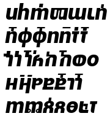 | 6 | 26 | 79 | 32 | 28 | 171 | 352 | 67.3% | 53 | 344 | 86.6% |
| Mulat Abay Bold | 6 | 26 | 79 | 32 | 28 | 171 | 352 | 67.3% | 53 | 344 | 86.6% |
| Mulat Abay Bold Italic 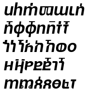 | 6 | 26 | 79 | 32 | 28 | 171 | 352 | 67.3% | 53 | 344 | 86.6% |
| Mulat Abay Italic | 6 | 26 | 79 | 32 | 28 | 171 | 352 | 67.3% | 53 | 344 | 86.6% |
| Mulat Abay Medium Italic | 6 | 26 | 79 | 32 | 28 | 171 | 352 | 67.3% | 53 | 344 | 86.6% |
| Mulat Abay Thin 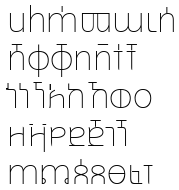 | 6 | 26 | 79 | 32 | 28 | 171 | 352 | 67.3% | 53 | 344 | 86.6% |
| Mulat Abay Thin Italic | 6 | 26 | 79 | 32 | 28 | 171 | 352 | 67.3% | 53 | 344 | 86.6% |
| Mulat Addis 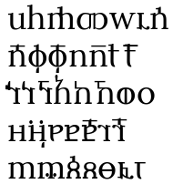 | 6 | 26 | 79 | 32 | 28 | 171 | 352 | 67.3% | 53 | 344 | 86.6% |
| Mulat Addis Bold | 6 | 26 | 79 | 32 | 28 | 171 | 352 | 67.3% | 53 | 344 | 86.6% |
| Mulat Addis Bold Italic | 6 | 26 | 79 | 32 | 28 | 171 | 352 | 67.3% | 53 | 344 | 86.6% |
| Mulat Addis Italic | 6 | 26 | 79 | 32 | 28 | 171 | 352 | 67.3% | 53 | 344 | 86.6% |
| Mulat Addis Medium 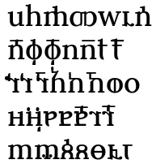 | 6 | 26 | 79 | 32 | 28 | 171 | 352 | 67.3% | 53 | 344 | 86.6% |
| Mulat Ahmed | 6 | 26 | 79 | 32 | 28 | 171 | 352 | 67.3% | 53 | 344 | 86.6% |
| Mulat Ahmed Italic | 6 | 26 | 79 | 32 | 28 | 171 | 352 | 67.3% | 53 | 344 | 86.6% |
| Mulat Asmara 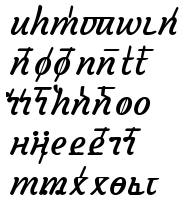 | 6 | 26 | 79 | 32 | 28 | 171 | 352 | 67.3% | 53 | 344 | 86.6% |
| Mulat Awash | 6 | 26 | 79 | 32 | 28 | 171 | 352 | 67.3% | 53 | 344 | 86.6% |
| Noto Sans Ethiopic 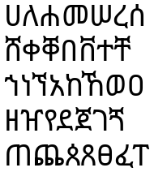 | 0 | 0 | 0 | 0 | 28 | 28 | 495 | 94.6% | 28 | 369 | 92.9% |
| Noto Sans Ethiopic Black 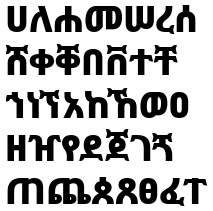 | 0 | 0 | 0 | 0 | 28 | 28 | 495 | 94.6% | 28 | 369 | 92.9% |
| Noto Sans Ethiopic Bold | 0 | 0 | 0 | 0 | 28 | 28 | 495 | 94.6% | 28 | 369 | 92.9% |
| Noto Sans Ethiopic Condensed | 0 | 0 | 0 | 0 | 28 | 28 | 495 | 94.6% | 28 | 369 | 92.9% |
| Noto Sans Ethiopic Condensed Black | 0 | 0 | 0 | 0 | 28 | 28 | 495 | 94.6% | 28 | 369 | 92.9% |
| Noto Sans Ethiopic Condensed Bold | 0 | 0 | 0 | 0 | 28 | 28 | 495 | 94.6% | 28 | 369 | 92.9% |
| Noto Sans Ethiopic Condensed ExtraBold 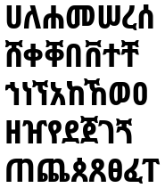 | 0 | 0 | 0 | 0 | 28 | 28 | 495 | 94.6% | 28 | 369 | 92.9% |
| Noto Sans Ethiopic Condensed ExtraLight 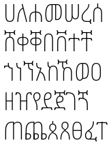 | 0 | 0 | 0 | 0 | 28 | 28 | 495 | 94.6% | 28 | 369 | 92.9% |
| Noto Sans Ethiopic Condensed Light 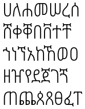 | 0 | 0 | 0 | 0 | 28 | 28 | 495 | 94.6% | 28 | 369 | 92.9% |
| Noto Sans Ethiopic Condensed Medium 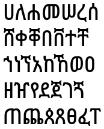 | 0 | 0 | 0 | 0 | 28 | 28 | 495 | 94.6% | 28 | 369 | 92.9% |
| Noto Sans Ethiopic Condensed SemiBold 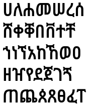 | 0 | 0 | 0 | 0 | 28 | 28 | 495 | 94.6% | 28 | 369 | 92.9% |
| Noto Sans Ethiopic Condensed Thin 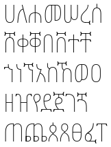 | 0 | 0 | 0 | 0 | 28 | 28 | 495 | 94.6% | 28 | 369 | 92.9% |
| Noto Sans Ethiopic ExtraBold | 0 | 0 | 0 | 0 | 28 | 28 | 495 | 94.6% | 28 | 369 | 92.9% |
| Noto Sans Ethiopic ExtraCondensed 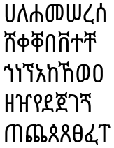 | 0 | 0 | 0 | 0 | 28 | 28 | 495 | 94.6% | 28 | 369 | 92.9% |
| Noto Sans Ethiopic ExtraCondensed Black | 0 | 0 | 0 | 0 | 28 | 28 | 495 | 94.6% | 28 | 369 | 92.9% |
| Noto Sans Ethiopic ExtraCondensed Bold | 0 | 0 | 0 | 0 | 28 | 28 | 495 | 94.6% | 28 | 369 | 92.9% |
| Noto Sans Ethiopic ExtraCondensed ExtraBold | 0 | 0 | 0 | 0 | 28 | 28 | 495 | 94.6% | 28 | 369 | 92.9% |
| Noto Sans Ethiopic ExtraCondensed ExtraLight | 0 | 0 | 0 | 0 | 28 | 28 | 495 | 94.6% | 28 | 369 | 92.9% |
| Noto Sans Ethiopic ExtraCondensed Light 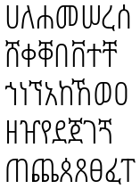 | 0 | 0 | 0 | 0 | 28 | 28 | 495 | 94.6% | 28 | 369 | 92.9% |
| Noto Sans Ethiopic ExtraCondensed Medium | 0 | 0 | 0 | 0 | 28 | 28 | 495 | 94.6% | 28 | 369 | 92.9% |
| Noto Sans Ethiopic ExtraCondensed SemiBold | 0 | 0 | 0 | 0 | 28 | 28 | 495 | 94.6% | 28 | 369 | 92.9% |
| Noto Sans Ethiopic ExtraCondensed Thin | 0 | 0 | 0 | 0 | 28 | 28 | 495 | 94.6% | 28 | 369 | 92.9% |
| Noto Sans Ethiopic ExtraLight | 0 | 0 | 0 | 0 | 28 | 28 | 495 | 94.6% | 28 | 369 | 92.9% |
| Noto Sans Ethiopic Light | 0 | 0 | 0 | 0 | 28 | 28 | 495 | 94.6% | 28 | 369 | 92.9% |
| Noto Sans Ethiopic Medium | 0 | 0 | 0 | 0 | 28 | 28 | 495 | 94.6% | 28 | 369 | 92.9% |
| Noto Sans Ethiopic SemiBold 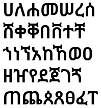 | 0 | 0 | 0 | 0 | 28 | 28 | 495 | 94.6% | 28 | 369 | 92.9% |
| Noto Sans Ethiopic SemiCondensed | 0 | 0 | 0 | 0 | 28 | 28 | 495 | 94.6% | 28 | 369 | 92.9% |
| Noto Sans Ethiopic SemiCondensed Black | 0 | 0 | 0 | 0 | 28 | 28 | 495 | 94.6% | 28 | 369 | 92.9% |
| Noto Sans Ethiopic SemiCondensed Bold | 0 | 0 | 0 | 0 | 28 | 28 | 495 | 94.6% | 28 | 369 | 92.9% |
| Noto Sans Ethiopic SemiCondensed ExtraBold 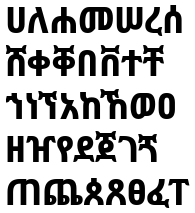 | 0 | 0 | 0 | 0 | 28 | 28 | 495 | 94.6% | 28 | 369 | 92.9% |
| Noto Sans Ethiopic SemiCondensed ExtraLight | 0 | 0 | 0 | 0 | 28 | 28 | 495 | 94.6% | 28 | 369 | 92.9% |
| Noto Sans Ethiopic SemiCondensed Light 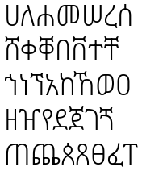 | 0 | 0 | 0 | 0 | 28 | 28 | 495 | 94.6% | 28 | 369 | 92.9% |
| Noto Sans Ethiopic SemiCondensed Medium 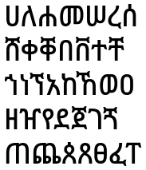 | 0 | 0 | 0 | 0 | 28 | 28 | 495 | 94.6% | 28 | 369 | 92.9% |
| Noto Sans Ethiopic SemiCondensed SemiBold | 0 | 0 | 0 | 0 | 28 | 28 | 495 | 94.6% | 28 | 369 | 92.9% |
| Noto Sans Ethiopic SemiCondensed Thin 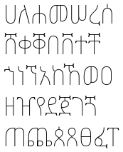 | 0 | 0 | 0 | 0 | 28 | 28 | 495 | 94.6% | 28 | 369 | 92.9% |
| Noto Sans Ethiopic Thin | 0 | 0 | 0 | 0 | 28 | 28 | 495 | 94.6% | 28 | 369 | 92.9% |
| Noto Serif Ethiopic | 0 | 0 | 0 | 0 | 28 | 28 | 495 | 94.6% | 28 | 369 | 92.9% |
| Noto Serif Ethiopic Black | 0 | 0 | 0 | 0 | 28 | 28 | 495 | 94.6% | 28 | 369 | 92.9% |
| Noto Serif Ethiopic Bold 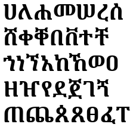 | 0 | 0 | 0 | 0 | 28 | 28 | 495 | 94.6% | 28 | 369 | 92.9% |
| Noto Serif Ethiopic Condensed | 0 | 0 | 0 | 0 | 28 | 28 | 495 | 94.6% | 28 | 369 | 92.9% |
| Noto Serif Ethiopic Condensed Black 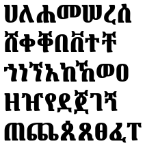 | 0 | 0 | 0 | 0 | 28 | 28 | 495 | 94.6% | 28 | 369 | 92.9% |
| Noto Serif Ethiopic Condensed Bold | 0 | 0 | 0 | 0 | 28 | 28 | 495 | 94.6% | 28 | 369 | 92.9% |
| Noto Serif Ethiopic Condensed ExtraBold | 0 | 0 | 0 | 0 | 28 | 28 | 495 | 94.6% | 28 | 369 | 92.9% |
| Noto Serif Ethiopic Condensed ExtraLight | 0 | 0 | 0 | 0 | 28 | 28 | 495 | 94.6% | 28 | 369 | 92.9% |
| Noto Serif Ethiopic Condensed Light 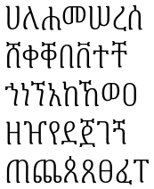 | 0 | 0 | 0 | 0 | 28 | 28 | 495 | 94.6% | 28 | 369 | 92.9% |
| Noto Serif Ethiopic Condensed Medium | 0 | 0 | 0 | 0 | 28 | 28 | 495 | 94.6% | 28 | 369 | 92.9% |
| Noto Serif Ethiopic Condensed SemiBold 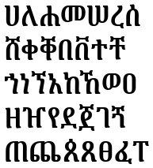 | 0 | 0 | 0 | 0 | 28 | 28 | 495 | 94.6% | 28 | 369 | 92.9% |
| Noto Serif Ethiopic Condensed Thin | 0 | 0 | 0 | 0 | 28 | 28 | 495 | 94.6% | 28 | 369 | 92.9% |
| Noto Serif Ethiopic ExtraBold 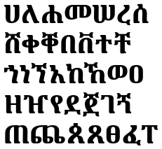 | 0 | 0 | 0 | 0 | 28 | 28 | 495 | 94.6% | 28 | 369 | 92.9% |
| Noto Serif Ethiopic ExtraCondensed | 0 | 0 | 0 | 0 | 28 | 28 | 495 | 94.6% | 28 | 369 | 92.9% |
| Noto Serif Ethiopic ExtraCondensed Black 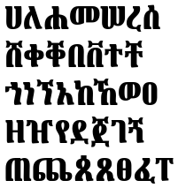 | 0 | 0 | 0 | 0 | 28 | 28 | 495 | 94.6% | 28 | 369 | 92.9% |
| Noto Serif Ethiopic ExtraCondensed Bold 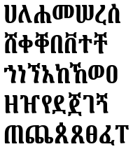 | 0 | 0 | 0 | 0 | 28 | 28 | 495 | 94.6% | 28 | 369 | 92.9% |
| Noto Serif Ethiopic ExtraCondensed ExtraBold 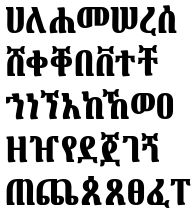 | 0 | 0 | 0 | 0 | 28 | 28 | 495 | 94.6% | 28 | 369 | 92.9% |
| Noto Serif Ethiopic ExtraCondensed ExtraLight | 0 | 0 | 0 | 0 | 28 | 28 | 495 | 94.6% | 28 | 369 | 92.9% |
| Noto Serif Ethiopic ExtraCondensed Light | 0 | 0 | 0 | 0 | 28 | 28 | 495 | 94.6% | 28 | 369 | 92.9% |
| Noto Serif Ethiopic ExtraCondensed Medium 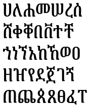 | 0 | 0 | 0 | 0 | 28 | 28 | 495 | 94.6% | 28 | 369 | 92.9% |
| Noto Serif Ethiopic ExtraCondensed SemiBold | 0 | 0 | 0 | 0 | 28 | 28 | 495 | 94.6% | 28 | 369 | 92.9% |
| Noto Serif Ethiopic ExtraCondensed Thin 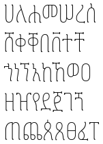 | 0 | 0 | 0 | 0 | 28 | 28 | 495 | 94.6% | 28 | 369 | 92.9% |
| Noto Serif Ethiopic ExtraLight | 0 | 0 | 0 | 0 | 28 | 28 | 495 | 94.6% | 28 | 369 | 92.9% |
| Noto Serif Ethiopic Light | 0 | 0 | 0 | 0 | 28 | 28 | 495 | 94.6% | 28 | 369 | 92.9% |
| Noto Serif Ethiopic Medium | 0 | 0 | 0 | 0 | 28 | 28 | 495 | 94.6% | 28 | 369 | 92.9% |
| Noto Serif Ethiopic SemiBold 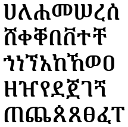 | 0 | 0 | 0 | 0 | 28 | 28 | 495 | 94.6% | 28 | 369 | 92.9% |
| Noto Serif Ethiopic SemiCondensed | 0 | 0 | 0 | 0 | 28 | 28 | 495 | 94.6% | 28 | 369 | 92.9% |
| Noto Serif Ethiopic SemiCondensed Black | 0 | 0 | 0 | 0 | 28 | 28 | 495 | 94.6% | 28 | 369 | 92.9% |
| Noto Serif Ethiopic SemiCondensed Bold | 0 | 0 | 0 | 0 | 28 | 28 | 495 | 94.6% | 28 | 369 | 92.9% |
| Noto Serif Ethiopic SemiCondensed ExtraBold | 0 | 0 | 0 | 0 | 28 | 28 | 495 | 94.6% | 28 | 369 | 92.9% |
| Noto Serif Ethiopic SemiCondensed ExtraLight | 0 | 0 | 0 | 0 | 28 | 28 | 495 | 94.6% | 28 | 369 | 92.9% |
| Noto Serif Ethiopic SemiCondensed Light | 0 | 0 | 0 | 0 | 28 | 28 | 495 | 94.6% | 28 | 369 | 92.9% |
| Noto Serif Ethiopic SemiCondensed Medium | 0 | 0 | 0 | 0 | 28 | 28 | 495 | 94.6% | 28 | 369 | 92.9% |
| Noto Serif Ethiopic SemiCondensed SemiBold | 0 | 0 | 0 | 0 | 28 | 28 | 495 | 94.6% | 28 | 369 | 92.9% |
| Noto Serif Ethiopic SemiCondensed Thin | 0 | 0 | 0 | 0 | 28 | 28 | 495 | 94.6% | 28 | 369 | 92.9% |
| Noto Serif Ethiopic Thin | 0 | 0 | 0 | 0 | 28 | 28 | 495 | 94.6% | 28 | 369 | 92.9% |
| ዋልድባ - ህዋእ | 15 | 26 | 75 | 32 | 28 | 176 | 347 | 66.3% | 54 | 343 | 86.4% |
| ዋልድባ - ውቂያኖስ | 11 | 18 | 75 | 32 | 0 | 136 | 387 | 74% | 14 | 383 | 96.5% |
| ዋልድባ - ዘላን | 11 | 26 | 75 | 32 | 28 | 172 | 351 | 67.1% | 50 | 347 | 87.4% |
| ዋልድባ - የብሰ | 12 | 26 | 75 | 32 | 28 | 173 | 350 | 66.9% | 51 | 346 | 87.2% |
| ዋልድባ - ይገዙ ብሥራት ጎቲክ | 11 | 26 | 75 | 32 | 28 | 172 | 351 | 67.1% | 50 | 347 | 87.4% |
| ዋልድባ - ይገዙ ብሥራት ጎፈር | 11 | 26 | 75 | 32 | 28 | 172 | 351 | 67.1% | 50 | 347 | 87.4% |
| ዋልድባ - ጅረት | 11 | 8 | 75 | 32 | 0 | 126 | 397 | 75.9% | 4 | 393 | 99% |
| ዋልድባ - ጥንት | 11 | 26 | 75 | 32 | 28 | 172 | 351 | 67.1% | 50 | 347 | 87.4% |
| ዋልድባ - ፋንትዋ | 11 | 18 | 75 | 32 | 0 | 136 | 387 | 74% | 14 | 383 | 96.5% |
| Font Name | Unicode | Modern Geʾez Sylalbary | |||||||||
|---|---|---|---|---|---|---|---|---|---|---|---|
| Missing Basic | Missing Supplement | Missing Extended | Missing Extended A | Missing Extended B | Total Missing | Total | % Complete | Missing MGS | Total MGS | % Complete | |
A0 Addis Abeba Unicode | 3 | 16 | 79 | 32 | 28 | 158 | 365 | 69.8% | 40 | 357 | 89.9% |
A0 Desta Unicode | 4 | 16 | 79 | 32 | 28 | 159 | 364 | 69.6% | 41 | 356 | 89.7% |
A0 Tesfa Unicode | 3 | 16 | 79 | 32 | 28 | 158 | 365 | 69.8% | 40 | 357 | 89.9% |
| Abnet | 13 | 16 | 79 | 32 | 28 | 168 | 355 | 67.9% | 46 | 351 | 88.4% |
Abnet16Unicode Bold | 13 | 16 | 79 | 32 | 28 | 168 | 355 | 67.9% | 46 | 351 | 88.4% |
| Abnet21Unicode Bold | 13 | 16 | 79 | 32 | 28 | 168 | 355 | 67.9% | 46 | 351 | 88.4% |
| AbnetZeSematate Bold | 13 | 16 | 79 | 32 | 28 | 168 | 355 | 67.9% | 46 | 351 | 88.4% |
| AbnetZethion Bold | 13 | 16 | 79 | 32 | 28 | 168 | 355 | 67.9% | 46 | 351 | 88.4% |
| Adwa | 4 | 26 | 79 | 32 | 28 | 169 | 354 | 67.7% | 54 | 343 | 86.4% |
| Adwa Bold | 4 | 26 | 79 | 32 | 28 | 169 | 354 | 67.7% | 54 | 343 | 86.4% |
| Adwa Sans Serif | 4 | 26 | 79 | 32 | 28 | 169 | 354 | 67.7% | 54 | 343 | 86.4% |
Adwa Sans Serif Bold | 4 | 26 | 79 | 32 | 28 | 169 | 354 | 67.7% | 54 | 343 | 86.4% |
ahabesha'stypewriter | 103 | 26 | 79 | 32 | 28 | 268 | 255 | 48.8% | 147 | 250 | 63% |
Chiret | 0 | 26 | 79 | 32 | 28 | 165 | 358 | 68.5% | 50 | 347 | 87.4% |
| Entoto | 0 | 26 | 79 | 32 | 28 | 165 | 358 | 68.5% | 50 | 347 | 87.4% |
| ETH_B_gofa | 54 | 26 | 79 | 32 | 28 | 219 | 304 | 58.1% | 94 | 303 | 76.3% |
Ethiopic Addis | 13 | 26 | 79 | 32 | 28 | 178 | 345 | 66% | 56 | 341 | 85.9% |
| Ethiopic Dire Dawa | 13 | 26 | 79 | 32 | 28 | 178 | 345 | 66% | 56 | 341 | 85.9% |
Geez Able | 4 | 26 | 75 | 32 | 28 | 165 | 358 | 68.5% | 49 | 348 | 87.7% |
| Geez Digital | 0 | 26 | 79 | 32 | 28 | 165 | 358 | 68.5% | 50 | 347 | 87.4% |
| Geez Pixels | 88 | 26 | 79 | 32 | 28 | 253 | 270 | 51.6% | 132 | 265 | 66.8% |
GeezTypeNet | 358 | 26 | 79 | 32 | 28 | 523 | 0 | 0% | 397 | 0 | 0% |
GS GeezMahtemUnicode | 358 | 26 | 79 | 32 | 28 | 523 | 0 | 0% | 397 | 0 | 0% |
| Godana | 0 | 26 | 79 | 32 | 28 | 165 | 358 | 68.5% | 50 | 347 | 87.4% |
Habesha Serif Distort | 2 | 10 | 79 | 32 | 28 | 151 | 372 | 71.1% | 44 | 353 | 88.9% |
Habesha Serif Distort Italic | 2 | 10 | 79 | 32 | 28 | 151 | 372 | 71.1% | 44 | 353 | 88.9% |
Habesha Serif Zibriqriq | 0 | 0 | 79 | 32 | 28 | 139 | 384 | 73.4% | 32 | 365 | 91.9% |
| Habesha stencil | 14 | 26 | 79 | 32 | 28 | 179 | 344 | 65.8% | 57 | 340 | 85.6% |
Habesha_Blocks | 56 | 26 | 79 | 32 | 28 | 221 | 302 | 57.7% | 96 | 301 | 75.8% |
Habesha_Blocks_BLACK Black | 55 | 26 | 79 | 32 | 28 | 220 | 303 | 57.9% | 96 | 301 | 75.8% |
| Habesha_Blocks_OUTLINES outlines | 56 | 26 | 79 | 32 | 28 | 221 | 302 | 57.7% | 96 | 301 | 75.8% |
| HABESHAPIXELS | 8 | 10 | 79 | 32 | 28 | 157 | 366 | 70% | 48 | 349 | 87.9% |
| HABESHAPIXELS-Bold Bold | 8 | 10 | 79 | 32 | 28 | 157 | 366 | 70% | 48 | 349 | 87.9% |
Kiros | 2 | 0 | 0 | 32 | 28 | 62 | 461 | 88.1% | 30 | 367 | 92.4% |
| Meaza | 0 | 26 | 79 | 32 | 28 | 165 | 358 | 68.5% | 50 | 347 | 87.4% |
| Neteru | 0 | 26 | 79 | 32 | 28 | 165 | 358 | 68.5% | 50 | 347 | 87.4% |
Seat | 83 | 24 | 79 | 32 | 28 | 246 | 277 | 53% | 121 | 276 | 69.5% |
Shiromeda | 0 | 26 | 79 | 32 | 28 | 165 | 358 | 68.5% | 50 | 347 | 87.4% |
Shiromeda Bold | 0 | 26 | 79 | 32 | 28 | 165 | 358 | 68.5% | 50 | 347 | 87.4% |
Shiromeda Semi Bold | 0 | 26 | 79 | 32 | 28 | 165 | 358 | 68.5% | 50 | 347 | 87.4% |
Shiromeda Serif | 0 | 26 | 79 | 32 | 28 | 165 | 358 | 68.5% | 50 | 347 | 87.4% |
Shiromeda Serif Bold | 0 | 26 | 79 | 32 | 28 | 165 | 358 | 68.5% | 50 | 347 | 87.4% |
| Shiromeda Serif Semi Bold | 0 | 26 | 79 | 32 | 28 | 165 | 358 | 68.5% | 50 | 347 | 87.4% |
Tayitu | 13 | 24 | 79 | 32 | 28 | 176 | 347 | 66.3% | 62 | 335 | 84.4% |
| Tera | 83 | 24 | 79 | 32 | 28 | 246 | 277 | 53% | 121 | 276 | 69.5% |
| TITUS Cyberbit Basic | 12 | 26 | 79 | 32 | 28 | 177 | 346 | 66.2% | 55 | 342 | 86.1% |
| Font Name | Unicode | Modern Geʾez Sylalbary | |||||||||
|---|---|---|---|---|---|---|---|---|---|---|---|
| Missing Basic | Missing Supplement | Missing Extended | Missing Extended A | Missing Extended B | Total Missing | Total | % Complete | Missing MGS | Total MGS | % Complete | |
| Code2000 | 0 | 0 | 0 | 0 | 28 | 28 | 495 | 94.6% | 28 | 369 | 92.9% |
| Font Name | Unicode | Modern Geʾez Sylalbary | |||||||||
|---|---|---|---|---|---|---|---|---|---|---|---|
| Missing Basic | Missing Supplement | Missing Extended | Missing Extended A | Missing Extended B | Total Missing | Total | % Complete | Missing MGS | Total MGS | % Complete | |
Adwa | 34 | 26 | 79 | 32 | 28 | 199 | 324 | 62% | 78 | 319 | 80.4% |
Ebrima | 0 | 0 | 0 | 0 | 28 | 28 | 495 | 94.6% | 28 | 369 | 92.9% |
Ebrima Bold | 0 | 0 | 0 | 0 | 28 | 28 | 495 | 94.6% | 28 | 369 | 92.9% |
| GS GeezMahtemUnicode | 13 | 16 | 75 | 32 | 28 | 164 | 359 | 68.6% | 42 | 355 | 89.4% |
Kefa Bold | 2 | 0 | 0 | 0 | 28 | 30 | 493 | 94.3% | 30 | 367 | 92.4% |
Kefa | 2 | 0 | 0 | 0 | 28 | 30 | 493 | 94.3% | 30 | 367 | 92.4% |
Monolithic Geez | 34 | 26 | 79 | 32 | 28 | 199 | 324 | 62% | 78 | 319 | 80.4% |
| Nokia Pure Headline Bold | 2 | 10 | 2 | 0 | 28 | 42 | 481 | 92% | 40 | 357 | 89.9% |
Nokia Pure Headline Ultra Light | 2 | 10 | 2 | 0 | 28 | 42 | 481 | 92% | 40 | 357 | 89.9% |
Nyala | 229 | 26 | 79 | 32 | 28 | 394 | 129 | 24.7% | 268 | 129 | 32.5% |